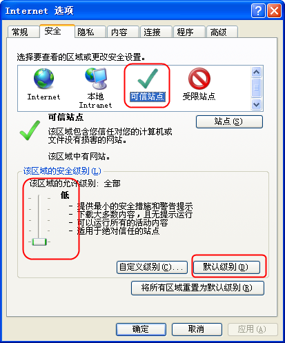
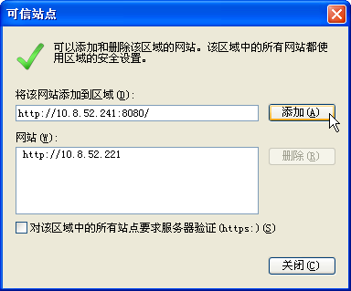
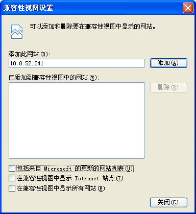
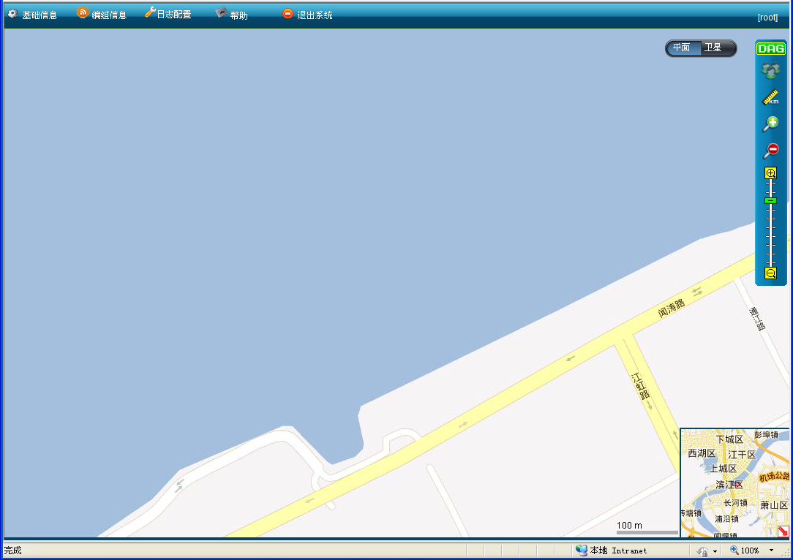
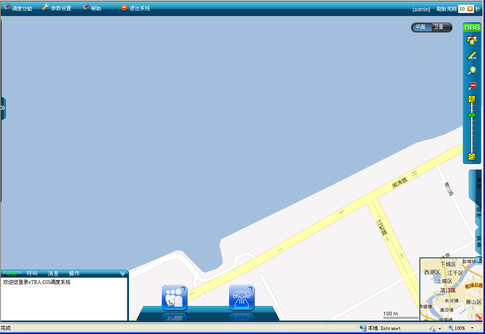

GIS系统是B/S结构，客户端用IE登录，为了确保登录成功，需要对IE进行一些设置。根据用户权限不同，GIS系统将用户划分为配置用户和调度用户。不同权限的用户登录后，出现界面的可用菜单有区别，配置用户登录系统后，主要进行基础信息、编组信息的维护和日志的配置以及对地图的一些日常操作。调度用户登录系统后，可以进行系统所有的调度功能的操作，但是不能进行系统基础信息、编组信息的维护。具体如下：
安装完成后，需设置GIS调度系统的登录站点为可信任站点，否则可能会出现拦截情况。
设置该站点为受信任站点的操作步骤如下：
1）在IE地址栏输入IP地址，http://GIS IP address:端口/login.aspx例如：http://10.8.52.241：8080/login.aspx，转至GIS调度系统登录主界面。
 说明：
说明：
根据实际应用场景，端口是可变的。
2）单击［工具/Internet选项］，打开Internet选项对话框。
3）单击“安全”选项卡，弹出如下图1所示对话框。
4）选中“受信任的站点”，单击“默认级别”，并将安全级别设置为“低”。

图1. 设置受信任站点安全级别
5）单击“站点”，弹出如下图2所示对话框。

图2. 设置可信任站点
6）去选择“对该区域中的所有站点要求服务器验证（https:）(s)”，单击“添加”。
7）成功添加该网站，单击＜确定＞，在Internet选项对话框中单击＜应用＞、＜确定＞完成操作。
8）重启IE浏览器，使配置生效。
客户端浏览器应为IE8.0。而IE8.0菜单中有一个“兼容性视图设置”项目，通过设置，可以让浏览器采用IE7.0的渲染模式，解决按照老版本浏览器要求开发的网页的错位和跑远等问题。
但GIS系统研发是基于IE8的视图模式，因而开启兼容性视图会导致一些脚本出错，功能不可用等问题，故要求关闭兼容性视图。
关闭兼容性视图设置的操作步骤如下：
1）点击IE右侧的“工具”按钮，选择“兼容性视图设置”，弹出“兼容性视图设置”对话框。
2）去选择“在兼容性视图中显示Intranet站点（I）”，如下图3所示。

图3. 兼容性视图设置
3）单击＜关闭＞完成操作。
登录GIS调度系统步骤如下：
1）打开IE8浏览器，在地址栏中输入GIS调度台服务器IP地址（可向管理员咨询）并回车，进入eTRA GIS调度系统的登录界面，如下图4所示。
图4. eTRA GIS调度系统登录界面
2）在用户类型选择“配置用户”，然后输入正确的用户名、密码，单击＜登录＞发送注册请求。
说明：
用户输入的用户名和密码，不超过20个ASCII字符的字符串。
用户名不同，操作权限也不相同。
具有本级管理权限的配置用户登录GIS系统后可管理本级单位及下属单位的各类信息。
3）服务器响应相关的登录权限判断，登录成功后，系统将显示配置用户客户端操作主界面，如下图5所示。否则提示登录错误信息。

图5.配置用户客户端主界面
界面各个区域分别对应各个操作区域，详情请参见“配置用户主界面布局”。
登录GIS调度系统步骤如下：
1）打开IE8浏览器，在地址栏中输入GIS调度台服务器IP地址（可向管理员咨询）并回车，进入eTRA GIS调度系统的登录界面，如下图4所示。
图6. eTRA GIS调度系统登录界面
2）在用户类型选择“调度用户”，然后输入正确的用户名、密码，单击＜登录＞发送注册请求。
说明：
用户输入的用户名和密码，不超过20个ASCII字符的字符串。
用户名不同，操作权限也不相同。
具有本级管理权限的调度员登录GIS系统后，可对本级单位及下属单位的用户进行调度工作。
3）服务器响应相关的登录权限判断，登录成功后，系统将显示调度用户客户端操作主界面，如下图5所示。否则提示登录错误信息。

图7. 调度用户客户端主界面
界面各个区域分别对应各个操作区域，详情请参见“调度用户主界面布局”。
调度台退出是指关闭GIS应用程序，清空所有客户端用户的用户名和密码，即完全退出调度台的使用。
在菜单栏中单击“”，提示是否确定退出GIS系统，单击＜确定＞即可退出调度台。
说明：
若注销时未释放所有资源，则退出失败。
Copyright © 2012 Eastcom, Inc. All rights reserved. |
||